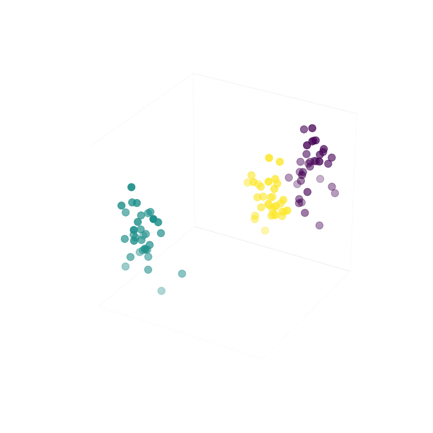
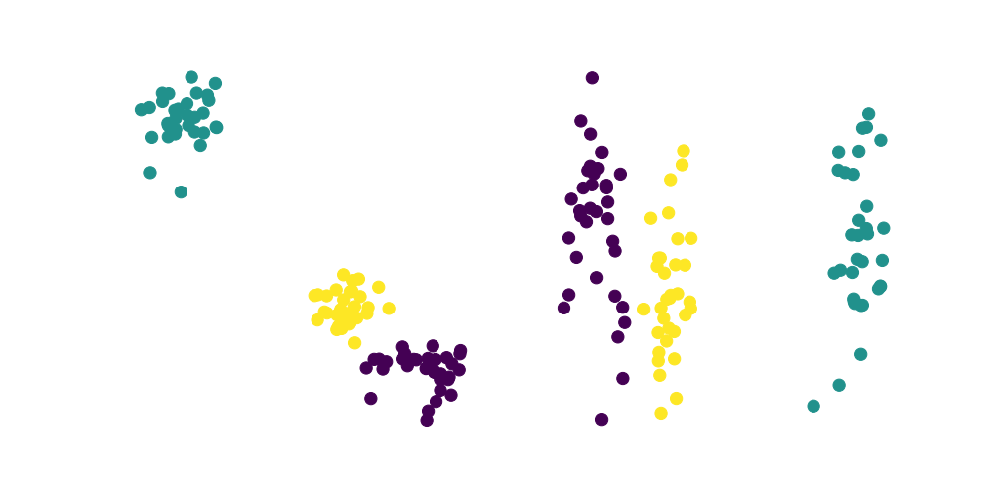
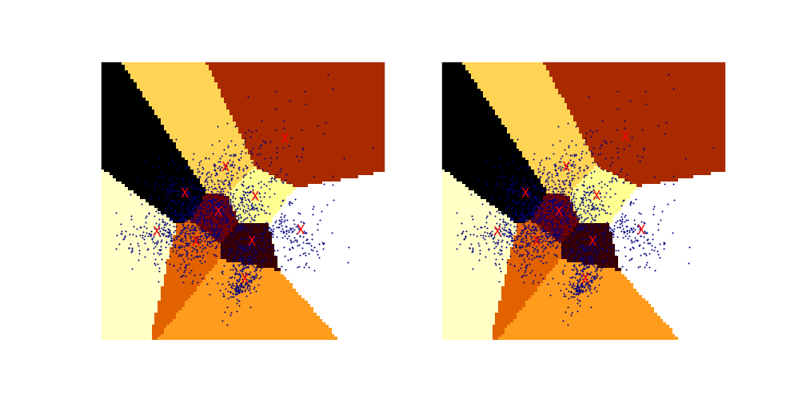

SVD vs PCA
Não vou tratar aqui de como se implementa o PCA e o SVD, prefiro indicar esses tutoriais abaixo, eles foram muito bem escritos e são muito claros sobre como são os cálculos usados:
Embora esses métodos possam ser usados para compressão de dados, análises populacionais e uma infinidade de análises envolvendo dados organizados em matrizes, aqui prefiro comparar cada método e discutir o uso voltado à redução de dimensões a fim que possamos visualizar os dados dessas anotações,
mas antes de chegar nas discussões, vamos ver alguns gráficos mostrando o que o SVD e o PCA retornaram quando os usamos para reduzir dimensões de matrizes:
curiosamente vemos que ocorreu uma rotação no gráfico do PCA e que o gráfico do SVD mantém uma certa similaridade visual com o gráfico original em 3D. Só compreendi melhor vendo esta resposta no Quora:
"Geometrically PCA corresponds to “centering the dataset”, and then rotating it to align the axis of highest variance with the principle axis."
Geometricamente, PCA corresponde a "centralização do dataset", e depois rotaciona para alinhar o eixo de maior variância com o eixo principal
Lógico que nem sempre acontece de ambos as representações ficarem tão diferentes, para observar melhor isso resolvi seguir um exemplo da documentação do sklearn
A imagem acima mostra que deve ter coincidido a forma como o SVD reduziu as dimensões e a rotação feita pelo PCA, só lembrando o que está de forma muito explícita no link para o Quora: o PCA usa o SVD para criar um ranking, afinal PCA significa "análise do componente principal" e o SVD fornece um dos passos para chegar ao componente pricipal.
Mas o KMeans realiza um aprendizado não supervisionado, e ainda especialmente neste caso onde a redução de 64 dimensões para 2 com certeza não deu margem para que os dados fossem linearmente separáveis, resolvi usar o SVM para desenhar o espaço para cada classe.
Algo que se deve ressaltar no gráfico acima é que os pontos semi-transparentes que adicionei ao gráfico são os que os classificadores treinados erraram, sobre isso repare no resultado abaixo:
erros SVD: 704 de 1797 erros PCA: 704 de 1797 erros normal: 0 de 1797 ----------------------- percentuais de acertos: > SVD: 60.824% > pca: 60.824% > normal: 100.000%
Considerei "normal" como a aplicação do SVM sem reduzir as dimensões. Estes resultados mostram que a sobreposição de dados na redução de dimensões assim como a distorção que ocorre nas transformações feitas com as matrizes, tende a dificultar o trabalho dos algoritmos, mesmo mantendo um certo nível de fidelidade com a distribuição original dos dadosm o melhor é usar essa redução mais para visualizar do que para aplicar métricas ou classificadores, e por isso também que nas notas onde uso distância euclidiana e similaridade de cossenos, ao reduzir as dimensões os resultados parecem errados ainda que nas dimensões originais esteja correto.
Comentários
Comments powered by Disqus